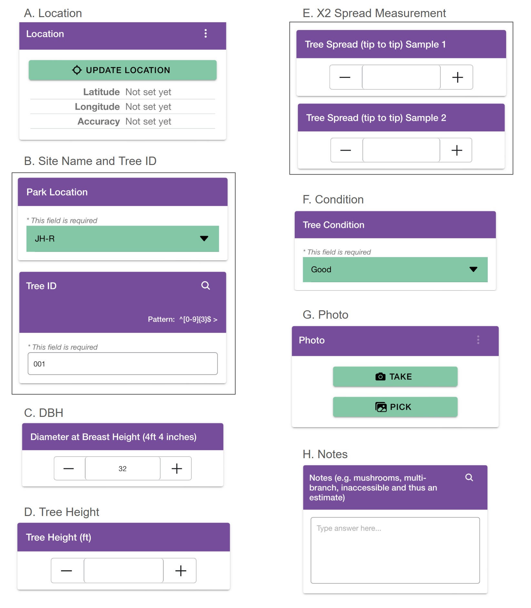

Method
Data Collection Tools and Procedure
Data for the 2025 Significant Tree Inventory project were collected using the EpicCollect5 mobile app. Field surveyors recorded the following information for each tree during inventory:
- Surveyor Name: Individual(s) who collected the data.
- Location: GPS coordinates (latitude and longitude) for mapping and spatial analysis (Figure 10A; Figure 2).
- Site Name & Tree ID: Unique identifiers assigned to each tree to enable tracking across sites (Figure 10B).
- Diameter at Breast Height (DBH): Measured 4 ft 4 in above ground using a diameter tape. Circumference was recorded in inches (Figure 10C).
- Tree Height: Measured using a tangent height gauge and measuring wheel (Figure 10D).
- Two-Point Crown Spread: Two perpendicular measurements across the widest points of the canopy, recorded with a measuring wheel (Figure 10E).
- Condition: Visual rating of tree health as Good, Fair, or Poor (Figure 10F; Table 2).
- Photo Documentation: A photograph of each tree was taken for verification and record-keeping (Figure 10G).
- Notes: Additional observations and any unusual features were recorded as needed (Figure 10H).

Figure 10: Screenshots of EpicCollect5 survey questions.
Measurement of Multi-branch Trees
Some trees encountered during the survey exhibited a multi-branch structure, meaning that the main trunk split into two or more major branches at or near breast height (approximately 4.5 feet above ground level). These branches function as co-dominant stems rather than a single central trunk, which makes standard diameter and spread measurements less straightforward.
To ensure consistency, multi-branch trees were measured using the same spread methodology applied to single-trunk trees, with careful attention to capturing the full canopy extent. Specifically, the canopy spread was measured in two perpendicular directions:
- First, the horizontal distance was measured between the outermost tips of the canopy from the leftmost branch tip to the rightmost branch tip, using the outermost visible branch extensions regardless of which trunk they originated from.
- Second, a perpendicular measurement was taken from the furthest branch tip in the front of the tree to the furthest branch tip behind the tree.
These two measurements capture the full canopy width across both major axes, ensuring that all major branches contributing to the canopy are included.
For trees with multiple co-dominant trunks, measurements were taken based on the overall tree structure rather than individual branches. The goal was to represent the total canopy size and spatial footprint of the tree as a single ecological unit.
This method ensures consistency across all trees and allows fair comparison between single-trunk and multi-branch trees.
Condition Rating Criteria
Tree condition was assessed visually using the following criteria:
| Condition | Description |
|---|---|
| Good | Healthy appearance with no major damage; branches generally upright. |
| Fair | Minor damage present (e.g., small holes, minor bark issues, leaking sap, or competing vegetation). |
| Poor | Significant damage or decay, including fungal growth, hollowed trunk or branches, or noticeable leaning. |
Table 2: Visual indicators used to assess tree condition.
Training and Quality Control
Field surveyors received standardized training on data collection procedures prior to inventory. Training included:
- Proper use of the EpicCollect5 app and consistent entry of metadata.
- Correct measurement techniques for DBH, height, and crown spread.
- Standardized criteria for condition ratings (Good, Fair, Poor).
- Practice measurements conducted on sample trees to calibrate methods and reduce inter-rater variability.
Each surveyor was provided with a standard equipment kit, which included:
- Measuring wheel
- Diameter tape
- Tangent height gauge
- GPS-enabled smartphone with EpicCollect5 installed and camera
- Hammer
- Tree tag
To ensure data quality, the following checks were implemented:
- Periodic spot checks of tree measurements and photos.
- Verification of GPS accuracy by comparing recorded coordinates to known site landmarks.
- Removal of duplicate entries and correction of obvious data entry errors during data cleaning.
Field Conditions
Data collection was conducted in December. During this period, snow was present on the ground at times, and trees had no leaves. These conditions may have influenced visibility and measurement accuracy, particularly for canopy spread and tree condition observations.
Limitations and Threats to Validity
Although the inventory followed standardized procedures, several limitations may affect the validity of results:
- Measurement error: Height and spread measurements may vary due to instrument limitations, uneven terrain, and observer judgment.
- GPS accuracy: GPS readings can be affected by canopy cover, weather conditions, and nearby structures, which may introduce spatial error.
- Subjective condition ratings: Visual assessment of tree condition is inherently subjective and may vary between surveyors.
- Seasonal constraints: Conducting the study in December (with snow cover and no leaves) may have reduced the ability to observe certain tree features, such as canopy density and foliage-related stress indicators.
- Incomplete coverage: Not all trees in each site may have been recorded, especially in dense or inaccessible areas.
- Inaccessible areas: Some inventoried trees were difficult to access safely (e.g., due to fences, thorns, dense vegetation, or wet/soft ground), which may have reduced measurement precision and required occasional estimation.
- Temporal factors: Tree condition may change over time; the inventory represents conditions only at the time of measurement.
These limitations should be considered when interpreting patterns in tree health, density, and distribution.